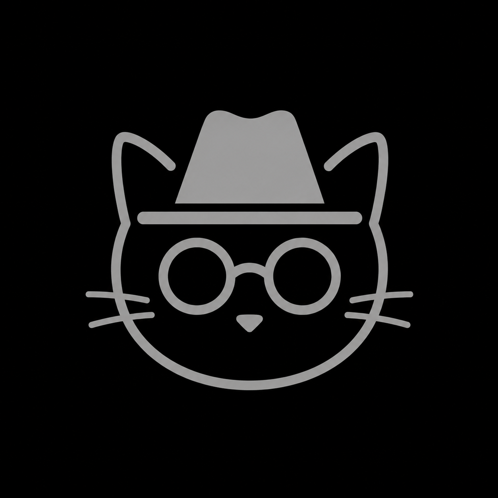
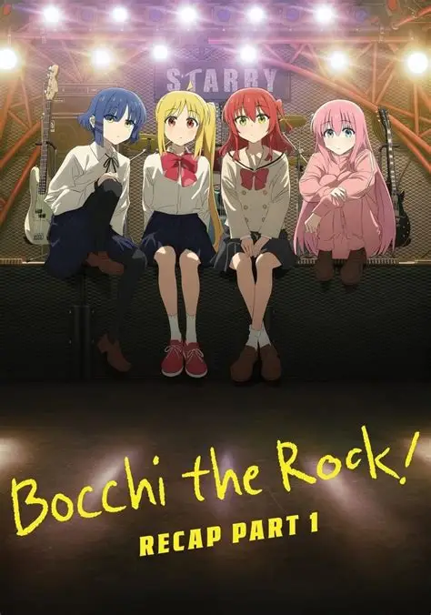

Martin Sabogal
(pallaso) · (el_michi_incogni)
BUENAS pos yo soy un estudiante del san carlos y desde sexto me gusto la programacion y me quede actual mente me quedo para no pagar los 20mil(no lo entenderian es un chiste interno)
PROLLECTOS :D
1.esta pagina web
y como no se que mas poner aca top 3 animes que 100 x 100 te deberias ver:3(segun mi opinion)(ya me los vi)
TOP 3
BOOCHI THE ROCK

La serie sigue el crecimiento personal de Bocchi, quien debe enfrentar su ansiedad social mientras descubre la alegría de tocar en vivo y trabajar en equipo. La música se convierte en el puente que le permite conectar con otras personas y ganar confianza
y tambien combina Combina comedia, música y slice of life rre aura
TOP 2
ASESINATION CLASSROOM
 disculpa por la calidad:(
disculpa por la calidad:(
La historia comienza cuando una criatura amarilla con tentáculos destruye parte de la Luna y anuncia que hará lo mismo con la Tierra en un año. El gobierno japonés le permite convertirse en maestro de la clase 3‑E, un grupo de estudiantes marginados, con una condición: ellos deben asesinarlo antes de que llegue la fecha límite.
TOP 1 Y EL MAS MEJOR (en mi opinion)
CHAIN SMOKER CAT
 ver con precaucion HUMOR NEGRO
ver con precaucion HUMOR NEGRO
La serie sigue el día a día de Yaniko Satō, una veinteañera “chica‑gato” que vive en un pequeño apartamento lleno de colillas y basura debido a su dependencia del tabaco Su adicción le causa problemas para pagar la renta, mantener trabajos y relacionarse con su hermana y vecinos, quienes intentan ayudarla sin mucho éxito Ambientada en un mundo donde humanos y humanimales conviven, la historia mezcla comedia absurda y humor negro con temas más serios como la precariedad, la discriminación y los ciclos de una adicción
(en este momento suena su intro:P)